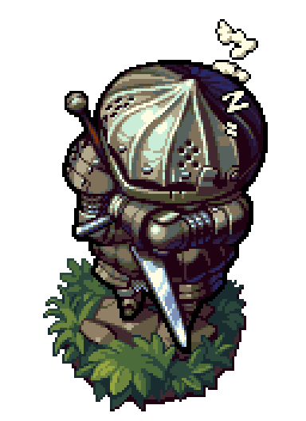

é um jogo do género RPG de ação produzido pela empresa japonesa FromSoftware e o terceiro da série Souls. Depois de alguns adiamentos, foi lançado pela Bandai Namco Games entre março e abril de 2014 para Microsoft Windows, PlayStation 3 e Xbox 360. Dark Souls II foi anunciado durante os Spike Video Game Awards em dezembro de 2012. Hidetaka Miyazaki, que foi director dos dois jogos anteriores da série, Demon's Souls e Dark Souls, serviu como supervisor, enquanto que a direcção ficou a cargo de Tomohiro Shibuya e Yui Tanimura.O game se passa dentro do mundo fictício de Drangleic, existindo menções e complementos ao enredo do game anterior, Dark Souls. O jogo usa servidores dedicados para o multijogador, e usa dois modos: jogador vs. ambiente (PvE) e jogador vs. jogador (PvP), para além de ter componentes cooperativos. Tal como em jogos anteriores da série, Dark Souls II tem uma jogabilidade desafiadora, mas com gráficos mais poderosos e um sistema de inteligência artificial mais avançado.
Clique aki para voltar a página home
